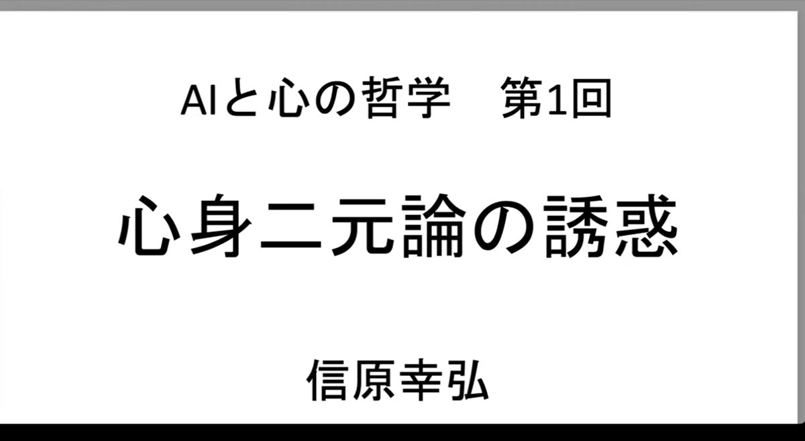
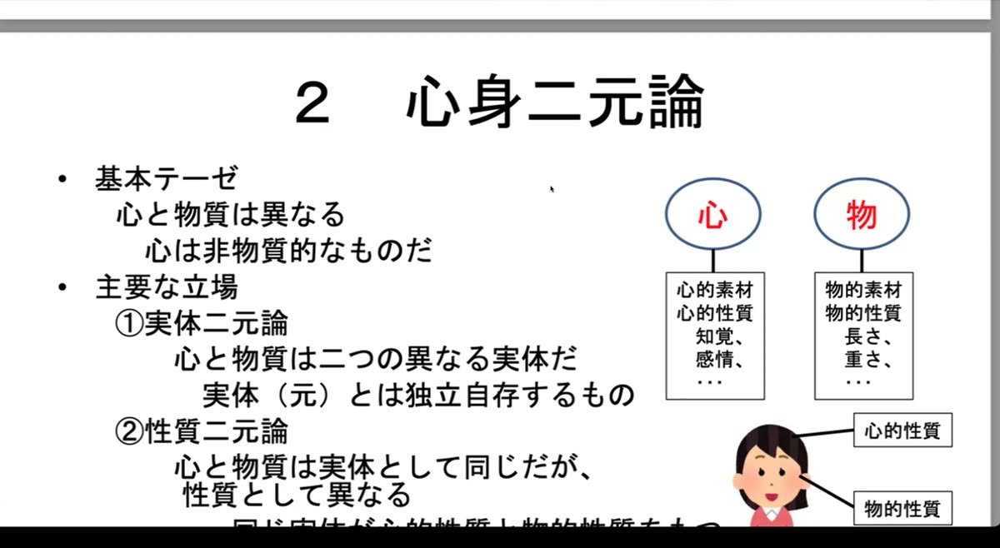
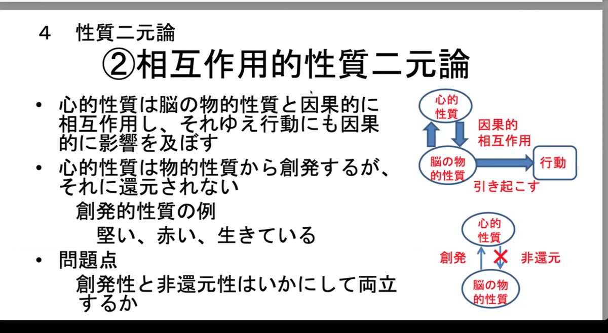
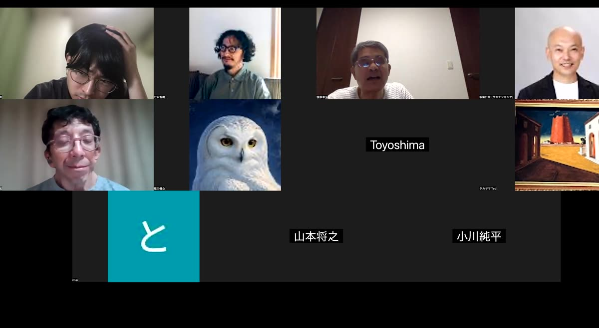

VIDEOS講義動画
OVERVIEW概要
記念すべき第1回は「心身二元論の誘惑」。心の哲学の根本問題である心身問題——心は物質（とりわけ脳）とどう関係するのか——を導入し、この問いに対して論理的に可能な3つの立場（心身二元論・心的一元論・物的一元論）を整理したうえで、我々の常識に深く根ざした「心身二元論」がなぜこれほど魅力的なのか、そしてどこで破綻するのかを、デカルトから現代哲学までを往還しながら検討した。
信原先生自身の立場は物的一元論（物理主義）。だからこそ、二元論に「惹かれる」ことを先生は「誘惑される」と呼ぶ。講義の合間には参加者からの質問が随時挟まれ、唯心論と科学の関係、実体概念の意味、創発と還元など、初回から本格的な哲学的応酬が展開された。
CONTENTS講義内容
ゼミの流儀——「唯我独尊」で議論する00:00–06:00
講義に先立ち、先生からこのゼミの心構えが語られた。曰く、スローガンは「唯我独尊」。自分だけが尊いという（本来とは異なる）意味で、「自分ができないことを誰かができても『そんなつまらないことができるのか』と思って堂々としていればよい」。プロの囲碁棋士は全員が「自分が一番強い」と思っているから、棋士たちの実力観を知りたければ「二番目に強いのは誰か」と聞かなければならない——という逸話も紹介された。哲学は偉い人の話をありがたく拝聴する営みではない。「おかしい」「わからない」と思ったら、それは話がおかしいのだから、遠慮なく言ってほしい、と。
心身問題——心の哲学の根本問題06:00–19:00

哲学の問いは「◯◯とは何か」という形をとる。心の哲学の根本問題は「心とは何か」であり、心は知覚・思考・情動・意志といった無数の心的状態と、その時間的展開である心的過程からなる。この「心とは何か」に迫る最重要の視点が心身問題——心は物質、とりわけ身体、なかんずく脳とどう関係するのか——である。
この問いへの答えによって、「身体が滅びても心は存続するか」「コンピュータは心を持ちうるか」といった、人類が問い続けてきた問題への答えも決まってくる。後者は1950年、コンピュータの設計者自身であるチューリングによって早くも提起された問いである。
心身問題には論理的に可能な立場が3つある。①心身二元論（心と物質は異なる）、②心的一元論（すべては心である＝唯心論・観念論）、③物的一元論（すべては物質である＝唯物論・物理主義）。なお日本で「唯物論」というとマルクス主義の弁証法的唯物論を想起させるため、講義では「物理主義」「物的一元論」の語を用いる。現代英米圏の物理主義の先祖は、むしろ弁証法的唯物論から「低俗」と批判された19世紀フランス啓蒙思想の機械論的唯物論（ラ・メトリ『人間機械論』）である。
問答：唯心論者は科学をどう見ているのか19:00–44:00
ここで神経科学を研究する参加者から「唯心論の立場を取る人は科学をどう見ているのか」という質問が出て、長い応答が展開された。先生は、学生時代に薫陶を受けた大森荘蔵の「立ち現れ一元論」（現象主義）を例に説明する。存在するのは意識への現れ（立ち現れ）だけであり、「目を閉じてもバナナがある」とは、目を開ければいつもバナナが見えるという立ち現れの規則性・秩序のことにほかならない。
Q. 無意識の情報処理や、意識に上らない脳の働きを唯心論はどう扱うのか？
A. 一切認めない。存在するのは意識に現れるものだけ。「無意識的なもの」も、意識への現れの規則性・秩序に相当するものとして解釈できる限りで存在する、という扱いになる。
Q. では唯心論にとって「予測」とは？
A. むしろ予測こそ唯心論の土俵である。予測とは「いま観察されていることから、次に観察されることを予測する」こと、すなわち立ち現れ間の関係にほかならない。科学の数式も、立ち現れの秩序を表現する道具としては使える——これは科学哲学における科学的実在論 vs 反実在論の論争そのものであり、「哲学的にはだいたい反実在論のほうが強くなってしまう」。
独我論を回避する仕方での唯心論はありうるかという追加の問いには、「神の心でも持ち出さない限り、独我論は唯心論のほとんど当然の帰結だと私は思う」と率直な回答。大森荘蔵も完全に独我論の立場を取っていた、と。
実体二元論——デカルト的二元論と通俗的二元論44:00–58:00

心身二元論には実体二元論と性質二元論の2つの主要な立場がある。実体とは、性質を担う本体であり、哲学的には「独立自存するもの」——他から影響を受けず、自らのうちで変化を起こすもの——と定義される。この定義を取る以上、心と物質が異なる実体であるならば、心身の相互作用はありえないことになる。
ここで重要な区別が導入される。哲学説としてのデカルト的二元論と、我々の常識がなんとなく取っている通俗的二元論である。後者は「心は肉体とは異なるが肉体に宿り、肉体と因果的に相互作用し、肉体の死後も存続しうる」という「機械の中の幽霊」的な立場。しかし実体を独立自存と定義するなら相互作用は認められないから、これは哲学的に突き詰めると破綻する。「常識は哲学的に突き詰めると必ず矛盾なり不整合なりが現れて破綻していく」。
デカルトの二元論——機械論的自然科学のための形而上学58:00–91:00
デカルトは物質の本性を延長（空間的広がり）に、心の本性を思惟（cogitatio＝今日でいう認知全般）に見た。心と物質は時間だけを共有するが、空間性において決定的に異なる異なる実体である。ゆえに心身の相互作用は定義上ありえず、心的出来事と物的出来事が同時に起こるのは「すべてたまたま」ということになる。この「たまたま」に知性が満足できないがゆえに、神が取り計らうとする機会原因論や、ライプニッツの予定調和説が生まれてくる。
デカルトが二元論を取った理由は3つ挙げられる。①内観によって自分が思惟実体であることは疑いえない（我思う、ゆえに我あり）。②純粋に物質的なシステムが言語や数学の能力を持つことは想像不可能であり、当時は想像不可能なものは形而上学的にも不可能とされた（この推論自体が現代哲学では大問題になっている）。③そして最大の動機：物質界から心の影響を締め出すことで、物質の因果的閉包性——物質的出来事の原因はすべて物質的出来事である——が確保され、生命現象まで含めて純粋に機械論的な自然科学が成立する舞台が整う。近代科学の大発展はこの設定から導かれた。
ただしデカルト自身、常識的な心身の相互作用の見かけには困っており、脳の松果体において「動物精気」という微細な物質が心身を媒介する、という苦しい解決案を出した。「微細にすれば魔法の力を持たせられる、幽霊みたいなものは微細な物質だと考えれば身体に危害を及ぼせると思えてくる、みたいな感じですね」と先生。
性質二元論——随伴現象説・相互作用説・現象的性質二元論91:00–109:00

性質二元論は、実体としては同一のものが、物的性質と心的性質という2種類の異なる性質を持つとする立場。スピノザは唯一の実体である神が2つの性質（属性）を持つとしたが、現代の我々にとっては「心を持つ人間こそ性質二元論的な存在ではないか」というのが出発点になる。3つの形態が紹介された。
- 随伴現象説：物的現象が心的現象を引き起こすが、心的現象は物的現象に対して因果的に無力。行動を引き起こすのはあくまで脳の物的過程であり、心はそれに随伴して生じるだけ。問題点：手を上げようと意志して手が上がるとき、意志が行動を引き起こしたとどうしても思えてしまう。
- 相互作用的性質二元論：心的性質と物的性質が因果的に相互作用する。特に、心的性質は物的性質から創発するが還元はされないとする創発説。ダイヤモンドの硬さやトマトの赤さのように、構成要素の配列から生まれるがそれに還元されない性質がモデルになる。問題点：創発性と非還元性がいかにして両立するのかは「いつまで経ってもなかなか決着を見ない」哲学の難問。
- 現象的性質二元論：心的性質は創発的ではなく、物的性質と並んで原初的に存在するとする。問題点：進化を考えれば、物質だけの世界から生命が、そして心が誕生してきたのだから、心的性質はやはり創発的に見える。
ここでは参加者から「この立場での『元』とは何を意味するのか」という鋭い質問が出た。実体二元論の「元」は独立自存で定義されるが、性質二元論の「元」は還元可能かどうかで定義される——同じ「二元論」でも論者によって「元」の意味が変わっていることに注意が必要だ、という重要な整理がなされた。
二元論を支持する4つの議論とその問題点109:00–121:00
二元論に我々が「誘惑される」理由として、4つの議論が検討された。
- 宗教による議論：多くの宗教が魂の不死を説く。→ 宗教は地動説の弾圧や進化論の否定など科学的問題の解決を妨げてきた事例が多く、教義は信頼できない。
- 内観による議論：内観が示すのは脳の電気化学的現象ではなく心的現象である。→ 内観は本当に不可謬か。冷水に手をつけてから室温の水に触れると温かく感じる例のように、内観も誤りうるのではないかという問題提起が20世紀半ば以降の分析哲学でなされている。
- 還元不可能性による議論：計算能力・言語能力、そしてクオリア（意識に現れる感覚的な質）と心的内容（志向性＝何かを表す働きの内容）は物的なものに還元できない。→ 計算能力は電卓が、言語能力は大規模言語モデル（LLM）がすでに持ったと言ってよいのではないか。残るクオリアと志向性こそ物的一元論への「主要な挑戦」であり、志向性の還元は第3〜4回、クオリア・意識の還元は第5〜6回で詳しく扱う。
- 超心理現象による議論：テレパシーや念力は物理学では説明できない。→ そもそも信頼できる超心理現象が存在しそうにないし、仮にあってもBBC（ブレイン・ツー・ブレイン・コミュニケーション）のような技術を考えれば物的に説明できるかもしれない。
二元論を否定する4つの議論121:00–131:00

- 単純性：説明力が同じなら根本的なものは少ないほうがよい（オッカムの剃刀）。二元論は2つ、一元論は1つ。
- 説明力：神経科学は視覚の背側経路・腹側経路の発見のように多くの心理現象を解明してきた。二元論は心的素材についての「理論」と呼べるものを何も提唱していない。
- 心的現象の神経依存性：感覚も理性も感情も意識も神経活動に依存している。実体二元論ではこの依存性は「たまたまの相関」としか言えず、理解しがたい。
- 進化史：生物は物質のより複雑な組織化の所産であり、進化の過程でも個体発生の過程でも、「心の息吹」が吹き込まれるような超自然現象が起こったとは考えられない。物質の組織化がある段階を超えると生命を持ち、さらに高い段階を超えると心を持つ——ただそれだけのことではないか。
DISCUSSIONディスカッションから
講義後は22時半を回っても質疑が続き、終了は23時前。主なやりとりを要約する。
- 哲学史の流れ：デカルトの二元論を出発点に、スピノザ・ライプニッツの平行論・予定調和を経て、西洋近代哲学の主流はむしろ観念論（カント、ヘーゲルらドイツ観念論）に向かった。それが19世紀後半から20世紀にかけて、マルクスによる転回、心理学の誕生、進化論の浸透とともに唯物論へと翻っていく——という大きな見取り図が、参加者の質問に答えて示された。
- 輪廻は物的一元論で解釈できるか：歴史上、輪廻はあくまで心身二元論の構図で唱えられてきた。しかし物理主義のもとで輪廻を解釈する立場は「論理的には可能なはず。関心がおありなら、ぜひそれを考えて唱えてみてください」。
- 常識の揺らぎ：かつては「肉体が滅んでも魂は存続する」が自然に受け入れられていたが、現代では「死んだら心もなくなる」という感覚が強まりつつある。ある参加者が「死んだら心は全くなくなると思っていて、葬式はただの儀式だと思っていた」と率直に語り、先生は「ではなぜそう思うのか。だとすれば葬式や四十九日は意味のないことをやらされているのか——そこを糸口に考えてみてほしい」と応じた。
- 不可視光と唯心論：人間の意識に現れない紫外線を他の動物は知覚しているかもしれない。それでも唯心論者は「動物に別の感覚があるという根拠自体が私の意識への現れから得られている」と応じる。ただし「バナナのように原理的には意識に現れうるもの」と「電子のように決して現れえないもの」の区別は重要な論点として残る。
- 道具主義という戦略：物を仮定したほうが心の現象をうまく説明できるなら、唯心論者も物質を「道具」として使ってよい。それは科学的反実在論の戦略そのものであり、コペルニクスが神学者の前では地動説を「天体の運行を簡単に予測できる仮定」と説明したのと同じ構図である。
- 哲学は水掛け論に持ち込めれば上出来：唯物論と唯心論の論争に最終的な決着はない。「哲学の議論は水掛け論に持ち込めれば上出来。あとは生き方の問題です。唯心論を取る人は唯心論的に生きていく。唯物論を取りながら唯心論的に生きているようではいけない——立場と生き方を一致させてほしい」。さらに、ABC予想の証明をめぐる数学界の論争を引きながら、「数学の証明ですら哲学的な問題になってきた」との指摘も。
SUMMARYまとめ
第1回は、心の哲学の全体地図を「心身問題」という一点から描き出す回だった。心身二元論は常識に深く根ざした魅力的な立場だが、実体を独立自存と定義するなら心身の相互作用を説明できず、性質二元論に退却しても創発と還元のジレンマが待っている。他方で唯心論は、哲学的には強靭でありながら独我論という代償を払う。物的一元論が残された道に見える——しかしそのためには、クオリアと志向性という2つの最大の難所を「還元」しなければならない。
「還元できるかどうか、ここをめぐってまさに論争している」。次回以降、機能主義（第2回）、志向性の還元(第3〜4回)、クオリア・意識の還元（第5〜6回）へと、この問いが本格的に展開されていく。
発表ゼミは2027年1月から毎月第2水曜に開催予定です。
このレポートはZoom録画の文字起こしをもとにAIが作成し、Technel事務局が確認したものです。発言の要約にあたって表現を整えています。
← 配信サイトトップに戻る